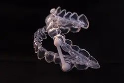

Many patients live with severe daytime exhaustion, mood swings, and difficulty concentrating without ever realizing they can relieve these symptoms by treating common sleep-related disorders, like obstructive sleep apnea in Texarkana. It causes cessations of breathing for potentially 1 minute or longer while sleeping. These events can occur hundreds of times throughout the night. The apnea incidents trigger a stress response from the brain and the body, waking you repeatedly during the night and significantly diminishing both the quantity and quality of sleep. Thankfully, you can get the rest you need with the right treatment.
Warning Signs of Sleep Apnea
Sleep apnea has several indicators, which can often be attributed to other issues; however, if you experience any of the following, it’s best to contact your physician right away:
- Chronic, loud snoring
- Frequent waking during sleep
- Waking gasping or choking for air
- Waking with a sore throat or dry mouth
- Excessive daytime exhaustion
- Lack of concentration
- Changes in mood or behavior
- Elevated blood pressure
- Memory loss
Treating Sleep Apnea
Dentists have years of advanced training in the way of oral and facial structures interact. This includes knowledge of the ideal airway function. When you visit a dentist to treat your sleep apnea, you can receive conservative, comfortable treatment that will allow you to sleep soundly throughout the night.
The best treatment depends on your individual needs. A CPAP is the most traditional solution, which delivers a steady stream of air pressure through a mask worn over the mouth or nose. Although it’s effective, it can be bothersome with some patients.
As an alternative to a CPAP, mild-to-moderate cases of sleep apnea can often be treated with an oral appliance, which repositions your lower jaw forward to keep the airway open. This gently shifts the jaw and places pressure on the throat muscles, keeping the airway clear and unobstructed throughout the night. In some cases, you may recommend a combination of treatments.
Many patients notice a difference in their sleep quality the first night of treatment. As each day passes, you may continue to see a gradual change in your symptoms until they dissipate. Even if your symptoms are resolved, it’s essential you continue with your sleep apnea treatment to control the disorder.
Schedule Your Consultation

If you’ve experienced sleep apnea warning signs or you’ve recently been diagnosed, it’s time to see your dentist in Texarkana. Our office offers the latest treatment solutions, including oral appliance therapy, to help our patients sleep soundly through the night. Contact our office today to schedule your consultation.Understanding the Cost of Sleep Apnea Treatment
While the idea of sleeping better sounds great, how much will you need to spend to get treatment? It’s an obvious question at the forefront of our patients’ minds, and the truth is that the price can vary from person to person. What affects the cost of sleep apnea treatment in Texarkana? Just click the button to find out everything you need to know.
Read more
Does Dental Insurance Cover the Cost of Sleep Apnea Treatment?
This is where things can get a little confusing.
Sleep apnea treatment using oral appliances is NOT covered by dental insurance, even though the appliance is provided by a dentist.
Why is this the case? It’s because sleep apnea is considered to be a medical issue, not a dental one, which is why it’s not included in dental policies.
Factors That Affect the Cost of Sleep Apnea Treatment
The reason why you might pay something different compared to your neighbor comes down to many factors, the most important being:
- Sleep Test: Before you can start sleep apnea treatment, you need an official diagnosis. This can only be done by undergoing a sleep test and having the results analyzed by a licensed sleep physician. It has its own separate cost.
- Treatment Choice: The two most popular treatments for sleep apnea are CPAP therapy and oral appliance treatment. There are multiple options to choose from even within those categories, which have varying price points.
Treat Your Sleep Apnea Now to Improve Your Health
Getting your sleep apnea under control won’t just stop your snoring or help you feel a little more energetic during the day—it can literally protect your overall health and save you thousands over the course of your life.
Untreated sleep apnea is very stressful on the cardiovascular system, drastically increasing someone’s risk for heart attack and stroke. And, if you have a family member with these kinds of issues, you know that the cost of ongoing treatment and prevention following a cardiac event can be quite expensive.
Also, being sleep-deprived all the time makes you 3X more likely to be in a motor vehicle or workplace accident. This cannot only lead to injuries, but also countless dollars lost due to missed work, necessary repairs, and increased insurance premiums.
A relatively small investment in sleep apnea treatment will benefit you both in the short and long term—this is true for your physical as well as your financial health!
Making Sleep Apnea Treatment More Affordable
If you are unable to afford sleep apnea treatment right now, our team can help put it in reach. We’ll make sure you don’t have to wait. With CareCredit, you can sign up for a low-to-no-interest payment plan personalized to your budget in minutes, and you’ll never have to deal with any hidden fees or surprise charges.
You can go over your options and even select a plan right now by clicking here. And if you have any questions, you are always welcome to reach out to our team.
Sleep Apnea FAQs
A sleep apnea diagnosis is life-changing, and you’re sure to have several concerns about what lies ahead, but there isn’t any reason to worry. We’ll take the time to explain your diagnosis and treatment during your initial visit. In the meantime, here are the answers to a few of the most common questions patients ask us to help ease any apprehensions until your appointment.
What are the complications of untreated sleep apnea?
Sleep apnea causes several complications, other than just a poor night’s rest. Instead, the frequent pauses in breathing make the oxygen level in your blood to drop. Over time, this strains your cardiovascular system, forcing your heart to work much harder. This can lead to a variety of issues, including high blood pressure, irregular heartbeat, and even an increased risk of stroke.
You’ll also be at risk of several other complications, including sleep deprivation. This causes your cognitive abilities to decline, which can make you significantly more prone to workplace and auto accidents.
Am I a candidate for oral appliance therapy?
Traditionally, sleep doctors have relied upon continuous positive airway pressure (CPAP) to relieve the symptoms of sleep apnea. As the name suggests, this treatment uses a continuous flow of air to keep the airway clear, allowing patients to sleep soundly throughout the night. Unfortunately, many patients have difficulty adjusting to loud sounds and strange sensations that accompany CPAP therapy. These patients are referred to as being CPAP intolerant. The American Academy of Dental Sleep Medicine recommends patients consider oral appliance therapy in any of the following situations:
- If patients find themselves CPAP intolerant
- If patients do not achieve adequate symptoms of relief with a CPAP alone
- If patients travel frequently making it less likely that they will use their CPAP consistently
Oral appliances are custom-made to fit your smile. These appliances shift the jaw forward to place pressure on the throat muscles that then stretch to keep the airway unblocked. Oral appliances can be used in conjunction with CPAP therapy to offer improved treatment for those with more severe sleep apnea.
Can I treat sleep apnea on my own?
If you’ve been diagnosed with sleep apnea, it’s essential you seek care from a qualified professional. There are certain changes you can make at home to breathe better, but they may not fully resolve your symptoms. It’s best to combine your sleep apnea therapy with certain lifestyle modifications, such as:
- Maintaining a healthy weight
- Avoiding alcohol before bedtime
- Quitting smoking